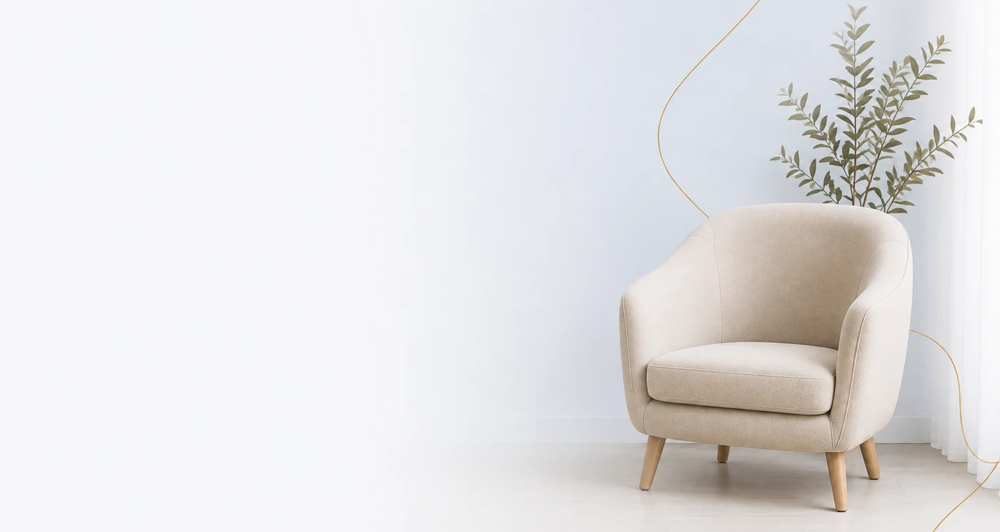

Ansiedade e Estresse
Estratégias para lidar com a ansiedade e o estresse do dia a dia, com mais equilíbrio emocional.
Como posso te acompanhar
Cada pessoa tem uma história única. Por isso, ofereço um espaço de escuta acolhedora e especializada para diferentes temas e demandas emocionais.
Estratégias para lidar com a ansiedade e o estresse do dia a dia, com mais equilíbrio emocional.
Um espaço para fortalecer a autoestima e desenvolver um olhar mais consciente sobre si mesmo.
Acompanhamento para questões afetivas, familiares e dificuldades presentes nas relações.
Apoio para o seu crescimento pessoal, construindo novos caminhos e formas de lidar com a vida.
Acolhimento em processos de luto e nas dificuldades de adaptação a novas fases da vida.
Cuidado com dificuldades emocionais, questões de saúde mental e avaliação psicológica quando necessário.
Você não precisa enfrentar tudo isso sozinho.
A psicoterapia pode te ajudar a compreender o que sente, aliviar o sofrimento e construir novos caminhos.
Atendimento online e presencial
COMO A TERAPIA PODE TE AJUDAR
Um espaço para compreender melhor o que você sente, fortalecer suas relações e desenvolver novas formas de lidar com os desafios da vida.
Desenvolva estratégias reais para lidar com a ansiedade do dia a dia, com mais equilíbrio emocional.
Construa uma relação mais saudável com você, reconhecendo seu valor e suas conquistas.
Fortaleça vínculos e desenvolva uma comunicação mais saudável com quem você ama.
Ganhe clareza e confiança para tomar decisões importantes na sua vida, sem culpa ou insegurança.
Sou Gustavo Franco, psicólogo, e realizo atendimentos individuais de forma acolhedora, ética e personalizada. Busco compreender sua história, suas necessidades e seus objetivos para construirmos juntos um processo terapêutico que respeite o seu momento e o seu ritmo.
Atuo com demandas como ansiedade, autoestima, autoconhecimento, relacionamentos, conflitos familiares, estresse, luto, dificuldades emocionais e de adaptação, além de questões relacionadas ao desenvolvimento pessoal e à saúde mental. Também realizo avaliação psicológica e intervenções específicas de acordo com cada necessidade.
Se você sente que é o momento de cuidar de si e compreender melhor o que está vivendo, entre em contato e agende sua sessão.
Agendar uma conversaAvaliações públicas deixadas por pacientes no perfil do Google do Gustavo.
Ótimo atendimento, muito atencioso, lugar confortável, me senti muito a vontade. Recomendo muito.
[ESPAÇO DE EXEMPLO — substituir por uma avaliação real quando disponível]
[ESPAÇO DE EXEMPLO — substituir por uma avaliação real quando disponível]
[ESPAÇO DE EXEMPLO — substituir por uma avaliação real quando disponível]
[ESPAÇO DE EXEMPLO — substituir por uma avaliação real quando disponível]
[ESPAÇO DE EXEMPLO — substituir por uma avaliação real quando disponível]
POR ONDE COMEÇAR
O atendimento é individualizado, acolhedor e ético, sempre considerando as suas necessidades e objetivos. No início, busco compreender a demanda que você traz, sua história de vida e os aspectos emocionais envolvidos.
A partir daí, construímos juntos o processo terapêutico, utilizando estratégias e intervenções adequadas ao seu caso.
QUERO CONVERSAR SOBRE O MEU CASOAmbiente seguro, sigiloso e sem julgamentos.

PRINCIPAIS DÚVIDAS
As sessões de psicoterapia duram 50 minutos e podem ser online ou presenciais, sempre pensadas para apoiar sua jornada de autoconhecimento e transformação.
Sim. Na terapia você encontra um espaço seguro para falar sem julgamento — muitas vezes coisas que nunca conseguiu dizer a ninguém. Só de compartilhar, a carga já diminui. Aos poucos, você passa a enxergar com mais clareza padrões, pensamentos e reações que não percebia sozinho, e isso te ajuda a ter mais assertividade nas suas escolhas.
Depende do que te trouxe até aqui. Uma questão mais pontual — uma crise, um momento difícil, um medo específico — costuma ser mais rápida de trabalhar. Já padrões antigos ou mudanças na forma de se relacionar naturalmente levam mais tempo. O objetivo também influencia: aliviar um sofrimento pontual é diferente de buscar autoconhecimento e crescimento mais profundos. Mas o que mais determina o ritmo é a sua participação — o quanto você se dedica, reflete e aplica no dia a dia o que conversamos.
[PENDENTE — Gustavo ainda vai decidir se atende por convênio.]
Sim. O sigilo é dever profissional previsto no Código de Ética do psicólogo e só é rompido nas situações previstas em lei, como risco à vida — e, mesmo nesses casos, isso é conversado com você.
Atendo somente de forma online, para todo o Brasil.